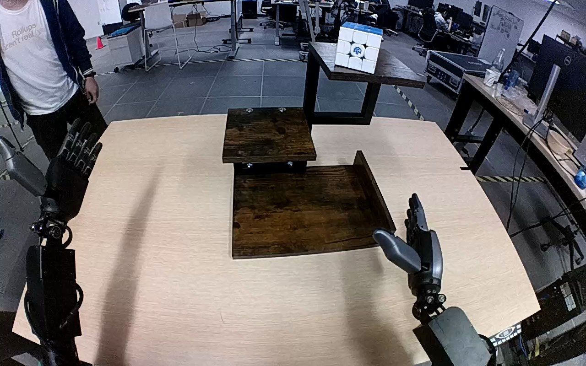

NVIDIA GR1 · 30
Video 30

Visual review action_review.json
{
"prompt_protocol": "humanoid_action_v1",
"prompt_provenance": "visually_authored_from_video_and_initial_frame",
"reviewed_contact_sheets": [
"sheet_001.jpg"
],
"inspected_frame_stride": 2,
"inspected_sampled_frame_count": 60,
"initial_scene": "A white-faced, blue-topped Rubik's cube stands on the highest platform of a three-level wooden shelf on the table. Both robot forearms and open hands are visible in front of the camera; a person stands beyond the table.",
"observed_sequence": [
{
"start_frame": 0,
"end_frame": 14,
"action": "Both hands are open; the cube is upright on the top platform. The left hand remains apart from the shelf.",
"confidence": "high"
},
{
"start_frame": 15,
"end_frame": 52,
"action": "The right arm raises toward the cube on the highest platform, bringing the open hand around its upper and side faces. The left hand stays open and does not contact the cube or shelf.",
"confidence": "high"
},
{
"start_frame": 53,
"end_frame": 66,
"action": "The right fingers close around the cube while it remains at the upper shelf, establishing the grasp.",
"confidence": "high"
},
{
"start_frame": 67,
"end_frame": 80,
"action": "The right hand lifts the cube clear of the top platform, then draws it toward the robot side while keeping it held.",
"confidence": "high"
},
{
"start_frame": 81,
"end_frame": 102,
"action": "The right arm lowers the held cube toward the bottom platform, bypassing the middle level.",
"confidence": "high"
},
{
"start_frame": 103,
"end_frame": 114,
"action": "The cube is lowered to the front portion of the bottom wooden surface while the right fingers remain around it.",
"confidence": "high"
},
{
"start_frame": 115,
"end_frame": 119,
"action": "The right fingers open around the cube on the bottom platform. The cube tilts slightly as the hand opens; the right hand remains directly beside and partly surrounding it at the final frame. No clear withdrawal follows.",
"confidence": "high for finger opening and position; moderate for complete support transfer"
}
],
"arm_hand_roles": {
"right": "Only manipulating hand: reaches the highest shelf, encloses the cube, lifts it, carries it downward, lowers it to the bottom shelf, and opens around it.",
"left": "Held open apart from the work area throughout; no supporting grasp or stabilizing contact.",
"coordination": "Single-hand manipulation; no hand-to-hand transfer, bilateral support, or person-robot object exchange."
},
"anatomical_side_evidence": {
"convention": "Robot-relative side established from the paired forearms extending forward on either side of the camera/workspace and the active hand thumb facing inward in the initial view. The active forearm and elbow assembly extend from the robot-side lower-right edge; the opposite arm stays at the lower-left edge.",
"confidence": "high",
"limitations": "The upper torso and shoulder attachment are outside the image, so side naming uses the visible bilateral arm arrangement and hand orientation rather than a direct view of the shoulders. The original right-hand annotation agrees with this visual interpretation."
},
"evidence_frame_indices": [
0,
44,
64,
70,
78,
102,
114,
116,
118,
119
],
"terminal_state": "The cube has reached the bottom wooden platform and the right fingers are opening around it. The right hand is still immediately beside and partly surrounding the tilted cube; a fully separated, settled placement is not shown. The top platform is empty and the left hand remains uninvolved.",
"uncertainties": [
"Complete release and stable unsupported settling cannot be confirmed because the right hand remains adjacent to the cube and partly obscures its support/contact at the ending."
],
"annotation_discrepancies": [],
"selected_execution_status": "incomplete",
"execution_status_evidence": "The instructed top-to-bottom relocation is visible, but only the beginning of finger opening is retained; complete hand separation and a settled end state are not observable.",
"inspection_coverage": {
"sampled_source_frames": "All even frames 0 through 118 viewed in sheet_001.jpg",
"native_source_frames": [
0,
44,
64,
70,
78,
102,
114,
116,
118,
119
],
"source_initial_png_viewed_at_native_resolution": true,
"source_frame_count": 120,
"all_returned_contact_sheets_visually_viewed": true
},
"video_id": "30",
"dataset": "NVIDIA_GR1_100",
"dedicated_review_agent": "review_gr1_30",
"review_source_video": "NVIDIA_GR1_100/30/original/original.mp4",
"source_frame_count": 120,
"source_fps": 20.0,
"native_detail_frames": [
0,
44,
64,
70,
78,
102,
114,
116,
118,
119
],
"world_model_prompt": "The robot grasps the Rubik's cube on the top level of the wooden shelf with its right hand and lifts it clear. It carries the cube downward to the bottom level, lowers it onto the wooden surface, and opens its fingers with the hand remaining beside the cube. Keep the camera fixed; preserve robot geometry, physically valid joint motion, and normal gripper opening and closing.",
"original_task_instruction": "Use the right hand to pick up rubiks cube from top level of the wooden shelf to bottom level of the wooden shelf.",
"selected_segment": {
"start_frame": 0,
"end_frame_exclusive": 120,
"reason": "Complete original single-task reference; no cropping or trimming requested."
},
"source_video_sha256": "03a3fd9d8a93ce3fbb8889ad8726a51f899a178355a27bb65c9e5cf7c0d52de8",
"review_completed_at": "2026-10-13T17:56:38.012375+00:00"
}